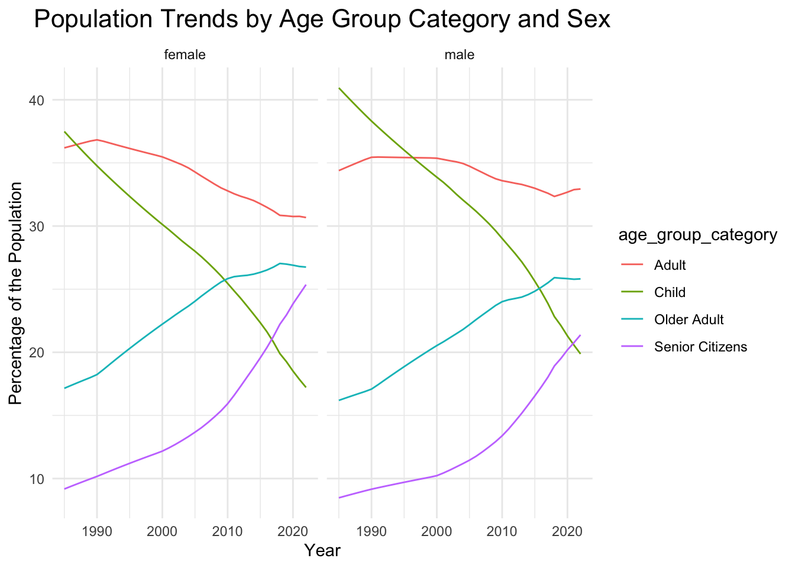
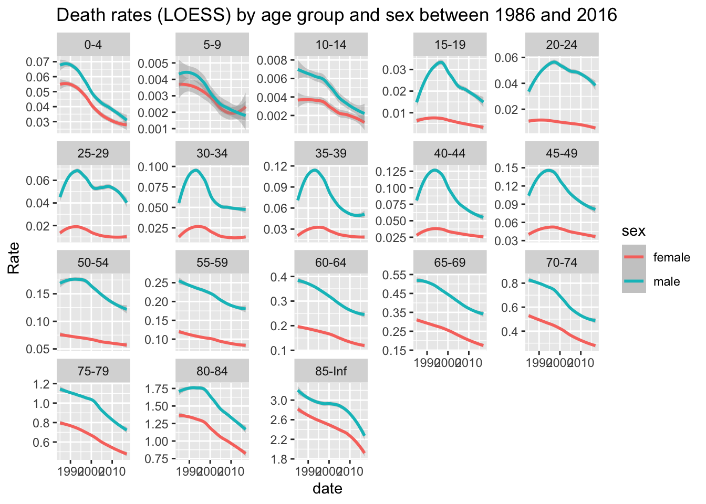
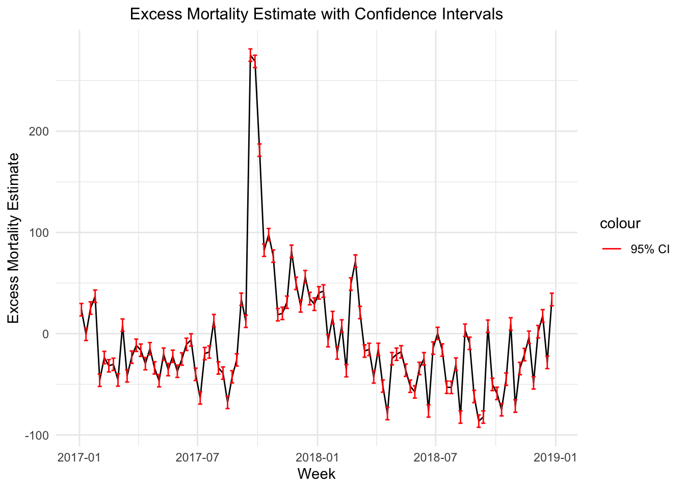
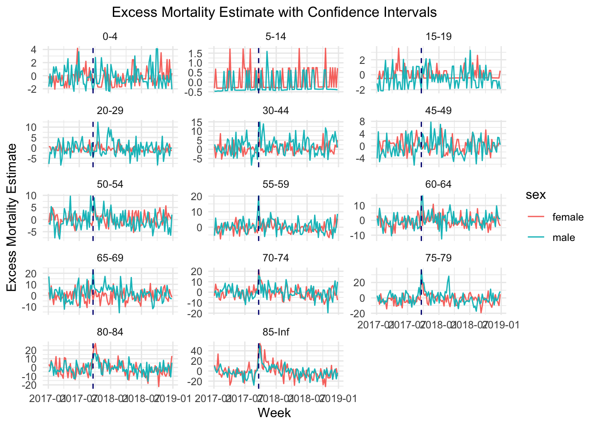

bst260-final
BST 260 Final Project
Harshi Saha, Jurijs Alehins, Tanush Kumar
Examining Mortality Trends in Puerto Rico: Demographic Patterns and the Impact of Hurricane Maria
Abstract:
Natural disasters such as floods, hurricanes, and earthquakes can bring about drastic changes in the population of a region. Quantifying these effects across time is of utmost importance from a public health and policy perspective. The major effects of such events can be captured using mortality data. Statistical methods such as regression models have become robust methods for modeling excess mortality due to these calamities. However, such models must overcome several issues, such as natural variation, seasonality, and demographic changes. In this project, we present a Poisson regression model that overcomes these challenges to forecast excess mortality in Puerto Rico. Our model accounts for seasonality, demographic factors such as age and sex, and effect modification between these terms. We demonstrate the effectiveness of our model by using it to quantify the effect of Hurricane Maria on the population of Puerto Rico. Our findings indicate that Hurricane Maria appears to have affected older populations, especially those above 55, more than other age groups. We also find disproportionate and time-varying trends by biological sex.
Introduction:
Understanding the changes in a population in response to a variety of factors, such as disease outbreaks, natural disasters, and socioeconomic collapse, is critical in guiding public health actions related to emergency response, policy decisions, and recovery efforts. A valuable metric to assess the extent of change is a population in the aftermath of an impactful event is mortality, as it is a measurable outcome that is directly representative of a negative change in the population of interest. Incidents that affect a population and that require public health responses can affect mortality both directly and indirectly, and the changes in the population in response to the incident, in terms of mortality, is highly specific to the nature of incident itself. Despite, and perhaps on account of the complexity posed by this characteristic of the measure of mortality, it is essential to develop methods to estimate mortality. Building on these estimations, excess mortality, the difference between the observed and expected number of deaths of a population, can be used as an indicator of the impact of public health crises and can guide policy and action as a response.
Estimating excess mortality is complicated by the presence of several influencing factors, such as changes in the population structure by demographic factors, seasonal fluctuations associated with disease, and other underlying trends in mortality. Moreover, major calamities can massively effect excess mortality, and the trend can be dependent on the type of event. For example, after a natural disaster such as a hurricane we generally see a spike in excess mortality. On the other hand, during epidemics we see a gradual rise in excess mortality, and then a gradual decline. In addition, the effects of such an event may vary by different groupings of the population of interest, making it necessary to adjust for variables such as age and sex. Though useful, methods of estimating excess mortality relying solely on trends in historical data fail to account for these sources of variability, in addition to inherently being unable to adapt estimations to distinct public health crises. However, they serve as a valuable tool to quantify the effect of such events on excess mortality for different demographic groups.
In this project, we attempt to model excess mortality in Puerto Rico in 2017 and 2018. We attempt to address some of the limitations of traditional modeling methods by using Poisson models to flexibly account for variability and the factors affecting mortality as mentioned above. We use the dataset puerto_rico_counts derived from the excess_mort package published as part of a related study, representing the records of mortality in Puerto Rico from 1985 to 2022.
Hurricane Maria was a powerful hurricane that devastated the northeast Carribean, including Puerto Rico, resulting in a death count of 2,975 people. We use our model to estimate excess mortality to estimate the impact of Hurricane Maria on the population. Through the model, we gain valuable insights on the impact of the hurricane on different demographic groups, specifically by age and sex.
Methods:
The source of the data for the majority of the analysis outlined in this report is the excessmort package, which has been utilized in and made available through a study using statistical methods to estimate excess mortality. The excessmort package was published in November of 2024, and contains the variable puerto_rico_counts, which is the data frame of interest for this study. The data frame contains 499,644 rows and 5 columns, which are agegroup, date, sex, population, and outcome, and the data ranges from January 1 of 1985, to December 31 of 2022. The outcome column represents the number of deaths for members of the corresponding age group and sex, in Puerto Rico, on the specified date, while the population column represents the number of individuals of the specified age group and sex, in Puerto Rico, on the specified date. The number of the week for each observation was redefined using the start day of Wednesday, as this is the day that Hurricane Maria made landfall, and this approach will prevent the immediate effect of the Hurricane in the first week of landfall from being split across two weeks in the data set. The data set contained daily count of deaths, and these were aggregate over for each week, by age and sex, in order to get the weekly mortalities such that the outcome was defined with one row for each combination of week, age, and sex.
The puerto_rico_counts data frame was examined for patterns of changes in population size by age and sex. First, a line graph was made using the raw counts of the total population, using the mean population for each week grouped by age and sex, from 1985 to 2022. Then, a line graph was made using the proportions of the total population, using the mean population for each week grouped by age groups, such that Child represented ages 0-19, Adult represented ages 20-44, Older Adult represented ages 45-64, and Senior Citizens represented ages 65 and above, and sex, from 1985 to 2022. The mortality rate was calculated by dividing the total grouped deaths by the average of the population grouped by age and sex for each week.
Based on the above, age groups with similar death rates were combined into larger groups, specifically, ages 5-14, 20-29, 30-44 were combined to create a new column age_group_category such that the values in the age_group_category column were 0-4, 5-14, 15-19, 20-29, 30-44, 45-49, 50-54, 55-59, 60-64, 70-74, 75-79, 80-84, and 85 and above.To account for the time dependent mortality trends across the years, a variables called day was created that described the number of days passed from the first day described in the data set, for each week. The features day and age_group_category were added to the puerto_rico_counts data set.
Since the outcome for this study, encoded by the outcome variable in puerto_rico_counts, is the number of mortalities, which is a count, the model of choice is Poisson Regression. The offset was set to log(population) to account for the risk of death relative to the size of the population. The covariates investigated in the model building process, from the puerto_rico_counts data set, were age_group_category, sex, week, day. Models were initially fit for 1985 to 2016 with and without one of day and week, and AIC and Likelihood Ratio Tests indicated that both variables should be included in the model. Additionally, effect modification was assessed between age_group_category and week, sex and week, age_group_category and sex, and age_group_category and day, and AIC and Likelihood Ratio Tests indicated that only the age_group_category-day and the age_group_category-sex interaction terms were significant. The data indicated slight signs of overdispersion, so an alternate model was fit using Negative Binomial Regression, however AIC indicated that the model fit was much worse than the Poisson model.
Therefore, the final model chosen to estimate mortality was a Poisson regression model with an offset of log(population) with outcome, the number of deaths, estimated using age_group_category, sex, week, day, age_group_category\*sex and day\*age_group_category. The expected mortality was calculated using this fitted model spanning 1985 to 2017 in the data set, and the standard deviation was calculated for each prediction. To identify periods from 1985 to 2017 having excess mortality to be investigated, weeks with actual mortality over 3 times the standard deviation of the estimated mortality were selected, and were then selected if the total excess mortality across age groups and sex for the identified weeks were greater than 100. These weeks were then cross-referenced with dates on which actual mortality increasing events of interest occurred in Puerto Rico. Selected observations that were identified as being associated with catastrophic events were dropped from the data set, after which the Poisson model chosen above was fitted again on the data set, form 1985 to 2017, with these outliers removed. This fitted model was then used to estimate mortality, and in turn calculate estimated excess mortality, for 2017 and 2018, and trends in mortality by age and sex, and especially around landfall of Hurricane Maria, were looked into.
Additionally, the data for the counts of deaths in Puerto Rico contained in the excessmort package was compared with data in the Demographic Registry - Quality and Vital Statistics Division as presented by the New York Times. This data was obtained and wrangled using the pdftools packages in R, and the specific code used to do so is contained in the file pdf_extract.qmd in the code directory. The extracted and cleaned data used can be found in the excess_mort.csv in the data directory. Specifically, the New York Times data regarding the number of deaths in Puerto Rico by year and month have been aggregated, from January of 2015 to November of 2017, and the data does not display any missingness.
Results:
In examining the population sizes of Puerto Rico by age group and sex, from 1985 to 2002, the population of individuals in the age groups 0-24 display a sharp decrease, while the population of individuals in the age groups 65 and above increased, for both sexes. For the individuals in the age groups with ages between 24 and 65 however, the population size appears to increase and then slightly decrease for both sexes. When grouping individuals by age, such that Child represented ages 0-19, Adult represented ages 20-44, Older Adult represented ages 45-64, and Senior Citizens represented ages 65 and above, as in Figure 1, it appears that the population of Children decreased drastically, and almost in a manner symmetrically opposite to the drastic increase in the proportion of Senior Citizens, and the proportion of Adults and Older Adults appear to decrease and increase respectfully towards a similar proportion, for both sexes.
Examining the weekly mortality rate by age and sex indicated similarities in death rate for the ages 5-14, 20-29, and 30-44, with the lowest death rates being from ages 5-14 and the highest death rates being from ages 70 and above, as indicated in Figure 2.

In order to identify periods before and during 2017 with an excess mortality, several Poisson models were evaluated and fit, and the final chosen model was then used to calculate estimates and standard deviations of estimated mortality for each week. Weeks with actual mortality over 3 times the standard deviation of the estimated mortality and with total excess mortality across age groups and sex greater than 100, were identified as having excess mortalities to be investigated. The weeks extracted here were 29, 3 of which corresponded to Hurricane Maria, which attained landfall on September 20, 2017, and at least 4 of which aligned with Hurricane Georges, which attained landfall on September 21, 1998. After dropping observations corresponding to the weeks of and close to these dates, as they were determined to have excess mortality influencing the model, the model was refitted to compute expected death rates. Predictions for the estimated mortality were then made for 2017 to 2018 using this refitted model, and the resulting weekly estimations and the 95% confidence intervals for excess mortality were as in Figure 3.

The estimations were then separated by age and sex for this time interval, and were visualized as in Figure 4.

Figure 3 indicates a rise in excess mortality on and after landfall of Hurricane Maria. Figure 4 indicates peaks in excess mortality that align with landfall of Hurricane Maria for age groups 30-44 and age groups above 50. There is a slight delay in the peak for those above 80. The age groups 30-44 and 50-79 display higher excess mortality in males than females, while the age groups 70-74 and 80 and above display the opposite.
Upon comparison of the data from the excessmort package and the New York Times Report of the Demographic Registry - Quality and Vital Statistics Division for the total number of deaths in Puerto Rico from 2015 to 2017, aggregated by year and month, it was found that the New York Times understated the number deaths overall. The total difference between the deaths reported by excessmort and the New York Times was 1328, with the largest difference being in November of 2017 at 1018, and the discrepancies in the reported number of deaths from the two data sources is visualized in Table 1 below.
| year | month | excessmort_count | NYT_count | count_diff |
|---|---|---|---|---|
| 2015 | 1 | 2744 | 2744 | 0 |
| 2015 | 2 | 2403 | 2473 | -70 |
| 2015 | 3 | 2425 | 2427 | -2 |
| 2015 | 4 | 2259 | 2259 | 0 |
| 2015 | 5 | 2341 | 2340 | 1 |
| 2015 | 6 | 2144 | 2145 | -1 |
| 2015 | 7 | 2383 | 2382 | 1 |
| 2015 | 8 | 2272 | 2427 | -155 |
| 2015 | 9 | 2258 | 2258 | 0 |
| 2015 | 10 | 2394 | 2393 | 1 |
| 2015 | 11 | 2268 | 2268 | 0 |
| 2015 | 12 | 2517 | 2516 | 1 |
| 2016 | 1 | 2742 | 2742 | 0 |
| 2016 | 2 | 2591 | 2522 | 69 |
| 2016 | 3 | 2461 | 2458 | 3 |
| 2016 | 4 | 2242 | 2241 | 1 |
| 2016 | 5 | 2312 | 2312 | 0 |
| 2016 | 6 | 2353 | 2355 | -2 |
| 2016 | 7 | 2458 | 2456 | 2 |
| 2016 | 8 | 2428 | 2272 | 156 |
| 2016 | 9 | 2370 | 2367 | 3 |
| 2016 | 10 | 2359 | 2357 | 2 |
| 2016 | 11 | 2485 | 2484 | 1 |
| 2016 | 12 | 2856 | 2854 | 2 |
| 2017 | 1 | 2894 | 2894 | 0 |
| 2017 | 2 | 2316 | 2315 | 1 |
| 2017 | 3 | 2496 | 2494 | 2 |
| 2017 | 4 | 2394 | 2391 | 3 |
| 2017 | 5 | 2394 | 2385 | 9 |
| 2017 | 6 | 2378 | 2363 | 15 |
| 2017 | 7 | 2378 | 2349 | 29 |
| 2017 | 8 | 2334 | 2313 | 21 |
| 2017 | 9 | 2948 | 2883 | 65 |
| 2017 | 10 | 3058 | 2906 | 152 |
| 2017 | 11 | 2689 | 1671 | 1018 |
| NA | NA | 86344 | 85016 | 1328 |
Discussion:
Based on the comparison of the population sizes of Puerto Rico by age group and sex as well the comparison of population sizes by aggregated age groups for Children, Adults, Older Adults, and Senior Citizens, the data indicates an aging population in Puerto Rico. From 1985 to 2022, the data indicates that the life expectancy increase, likely due to a combination of improved living conditions and medical advancements, and relative fertility has decreased. The middle aged population appears somewhat stable, suggesting a buffer population that supports individuals of the population in both the younger and older age groups. Calculations of the weekly death rate by age group and sex from 1985 to 2002 in the data set indicate that those of the ages 5-14, 20-29, and 30-44 had similar rates of mortality, and that the lowest death rates were observed for those of ages 5-14 and the highest death rates were observed for those of ages 70 and above. These trends in mortality rate for children and Young to Middle Aged Adults are likely due to reduced infant mortality and improvements in health care, and the trends for Older Adults and Senior Citizens can be attributed to age related chronic conditions.
The final Poisson model selected using AIC and Likelihood Ratio Tests indicated the estimates of mortality were significantly associated with age, sex, interaction terms representing effect modification of age by sex, as well as temporal elements such as week of the year as well as day. The model was first fitted on data from 1985 to 2017, and weeks with high outlyingness in terms of observed mortality and excess mortality were identified. When cross-referenced with major public health incidents in Puerto Rico, these dates identified Hurricane Maria, September 20, 2017, as well as Hurricane Georges, September 21, 1998. The effects of these hurricanes were seen in large values of excess mortality over the days and weeks following these disasters, indicating that effects of such disasters are not always immediate. The peaks in excess mortality themselves were not necessarily on the week or date of the incident itself, but were often delayed. This is likely due to a combination of delayed and inaccurate reporting in deaths immediately after these disasters,as well as the fact that such disasters have both direct and indirect effects on mortality, the latter of which may take longer to manifest.
The Poisson model was then refit without the weeks where mortality was deemed as being influenced by Hurricane Maria and Georges, and predictions were made on mortality for 2017 and 2018. The trends in the excess mortality estimations made using the estimated mortality predicted by the selected model indicate large values right after and in the around 6 months following Hurricane Maria. The values for excess mortality before and after this interval are much smaller, and trend at around 0. This is indicative of the direct, as well as delayed and indirect effects of Hurricane Maria on population mortality, and our modeling approach appears to capture this well, as there are no similar trends in the other time points. In comparing the trends in estimates of excess mortality by age and sex for the same time period, the age groups 55-59 and 65 and above have the highest excess mortality, while those aged 5-19 have the lowest excess mortality. In looking specifically at excess mortality in the immediate aftermath of Hurricane Maria, for those below 70 and those 75-79, the excess mortality was higher for males than females, while the opposite was true for those 80 and above. The peaks in excess mortality for those in younger age groups were generally more delayed than for those in older age groups. These trends are likely due to the greater physical resilience to the effects of the Hurricane in younger, non-infant, individuals, and the delayed effects on mortality are likely due to disruptions in health care services.
Furthermore, as described in the results section, the largest discrepancy in the count of deaths between the excessmort package and the New York Times report is in November of 2017, with 1018 deaths being underreported. As the New York Times Report does not include deaths for December of 2017, this report was likely compiled in or around December of 2017. Additionally, the discrepancies between the two data sources (excessmort - NYT) is positive and starts increasing from September to November of 2017. This increase in the discrepancy can be attributed to Hurricane Maria as well as the time at which the NYT report was likely compiled, as the updating of the death toll would have been slow and inaccurate in the wake of such a catastrophic natural disaster.